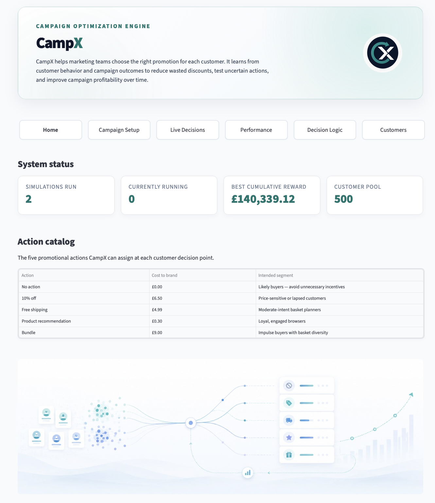

Frontend App — Streamlit
Overview
The CampX frontend is a Streamlit multi-page app that connects to the FastAPI backend and provides an interactive dashboard for campaign management and analysis.

App URL (local):
http://localhost:8501
Pages
| Page | File | Purpose |
|---|---|---|
| Home | app.py |
Product overview, navigation, and key metrics summary |
| Campaign Setup | pages/1_create_simulation.py |
Configure and launch a new campaign run; review existing runs |
| Live Decisions | pages/2_interaction.py |
Monitor reward per round and action selection over time |
| Performance | pages/3_analytics.py |
Cumulative campaign value, policy summary, action distribution, conversion by action, segment performance |
| Decision Logic | pages/4_model.py |
Inspect learned LinUCB weights, promotion selection volume, and per-customer action score breakdown |
| Customers | pages/5_customers.py |
Browse and filter customer profiles by segment and RFM features; view interaction history |
Design Notes
- All pages use a shared
bandit_utils.pyhelper module for API calls, formatting, and UI components. - Navigation is rendered as a tab bar at the top of every page.
- Charts use native Streamlit components (
st.line_chart,st.bar_chart,st.area_chart,st.dataframe). - The sidebar campaign run selector is shared across Performance, Live Decisions, Decision Logic, and Customers.
- The DS container runs as a batch job and exits with code 0 after persisting data. The frontend does not depend on it being running.
Frontend Reference
bandit_utils.py
bandit_utils.py — shared API client, theme constants, product copy, and formatters.
Owner: Armine Babajanyan (frontend branch)
APIError
Bases: RuntimeError
Raised when the backend returns a non-2xx response or is unreachable.
Source code in campx/app/bandit_utils.py
96 97 98 99 100 101 | |
render_sidebar_and_css()
Render global sidebar and inject product-grade CSS.
Source code in campx/app/bandit_utils.py
346 347 348 349 350 351 352 353 354 355 356 357 358 359 360 361 362 363 364 365 366 367 368 369 370 371 372 373 374 375 376 377 378 379 380 381 382 383 384 385 386 387 388 389 390 391 392 393 394 395 396 397 398 399 400 401 402 403 404 405 406 407 408 409 410 411 412 413 414 415 416 417 418 419 420 421 422 423 424 425 426 427 428 429 430 431 432 433 434 435 436 437 438 439 440 441 442 443 444 445 446 447 448 449 450 451 452 453 454 455 456 457 458 459 460 461 462 463 464 465 466 467 468 469 470 471 | |